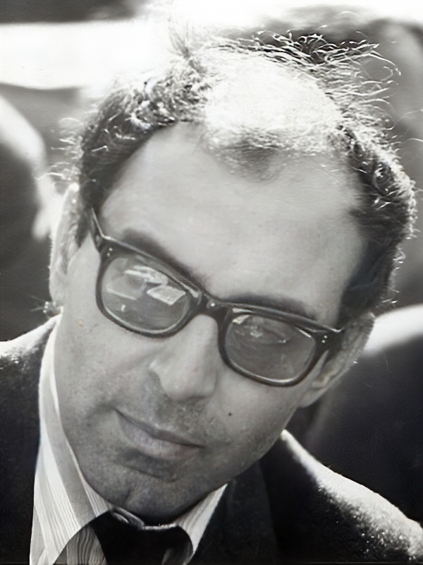
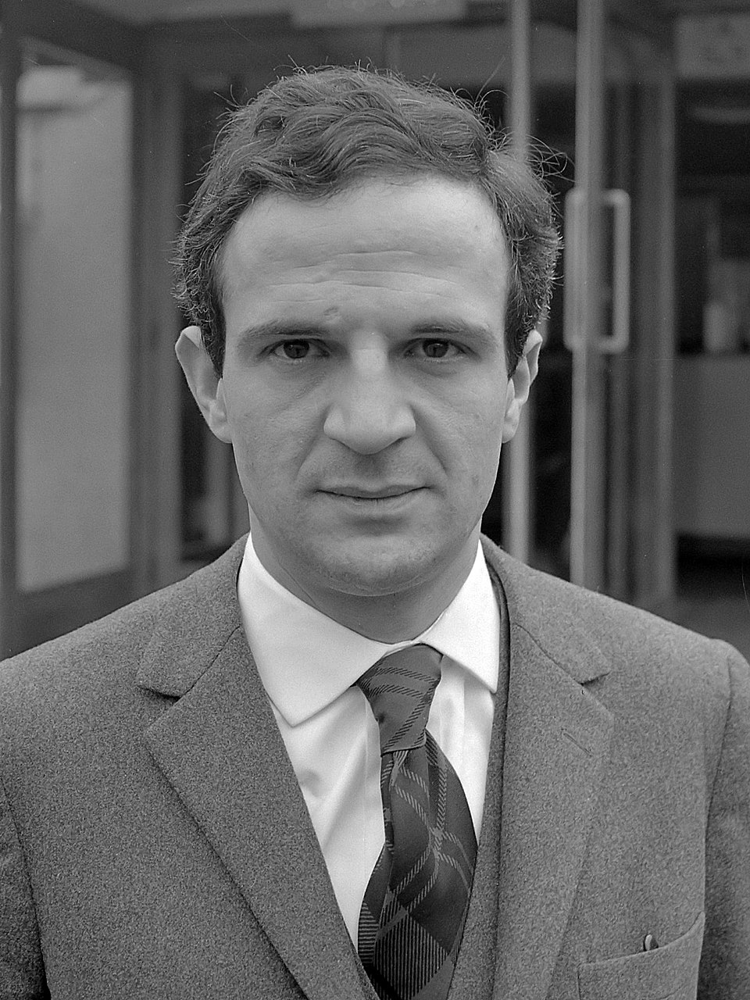

Jean-Luc Godard · 1968

François Truffaut · 1965
1950년대 말, 평론지 Cahiers du Cinéma에 모인 젊은 비평가들은 할리우드식 매끈한 스튜디오 영화를 거부했습니다. 그들은 카메라를 들고 직접 거리로 나갔습니다.
트뤼포의 《400번의 구타》(1959)와 고다르의 《네 멋대로 해라》(1960)가 불을 붙였습니다. 각본은 현장에서 바뀌고, 배우는 즉흥으로 말했습니다. 관객은 — 영화가 어떻게 만들어지는지를 처음 보게 되었습니다.